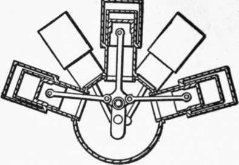
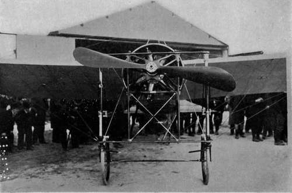

Aeroplane Motors. Part 3
Description
This section is from the book "The New Art Of Flying", by Waldemar Kaempffert. Also available from Amazon: The New Art of Flying.
Aeroplane Motors. Part 3
Fig. 58.
Fig. 59.
Figs. 58 and 59. Engine with four cylinders radially arranged.
" When many cylinders are used it is impracticable actually to put all the connecting rods to work onto one crank pin, as either the big ends would have to be very narrow, or the crank pin impracticably long. This can, however, be got over by the arrangement shown in Fig. 60.
Fig. 60. Arrangement of connecting-rods of an engine with four radial cylinders.
" Probably the greatest difficulty in making the radial engine satisfactory is that of lubrication. This is a matter which does not seem to have had nearly as much attention paid to it as it needs. . . . The even distribution of the oil to the various cylinders of a radial engine is very difficult, and further, however well it might be managed when the engine is running, as soon as it stops the oil runs into the lower cylinders, and probably fouls the plugs, so that it is difficult to start it again. In order to get over this, the engine has occasionally been mounted on its side, with the crank shaft vertical, the propeller being driven through bevel gear. If it is desired to run the propeller slower than the engine, there is no great objection to this, and there is little doubt that the slow-running propeller is much the more efficient. Another plan is to modify the arrangement of the cylinders. Thus in one make of three-cylinder engine the cylinders are all at the top of the crank case (Fig. 61), all the connecting rods leading to one crank pin. In this case it is impossible to divide the impulses evenly, and the balancing is not so good. In practice this type of engine is made with inside fly-wheels of considerable weight, and runs well, but the fly-wheels necessarily add to the weight. Another plan is to put all the cylinders at the top of the crank case, and to place those which should have been at the bottom in a complete radial engine on a crank opposite to the others, as shown in Fig. 62.
Fig. 61. Arrangement of cylinders and crank case of one type of three-cylinder engine.
Fig. 62. Disposition of cylinders crank case and connecting-rods in one type of engine.
" In some cases the radial engine is made with the crank shaft fixed and the cylinders revolving. As constructed by the Société des Moteurs Gnome, this type (Fig. 46) has given very good results, but it may be doubted whether they are due simply to making the cylinders revolve. A very small amount of consideration will show that the radial engine will be of the same weight whether the cylinders revolve or the crank shaft, all other details of construction being, of course, assumed to be the same. This being so, the only way in which the revolving cylinders can be an advantage is either by obtaining a lighter construction of cylinder or crank case, or else by increasing the power obtained from a given sized cylinder. There does not seem any reason for supposing that revolving the cylinders secures either of these results.
Fig. 46. A Blériot monoplane showing a seven-cylinder, fifty-horsepower rotary Gnome motor. The motor spins around with the propeller at the rate of about 1400 revolutions a minute.
Photograph by Edwin Levick.
" The advantages of the revolving cylinders are: (1) That they act as a fly-wheel, and (2) that they render air-cooling more efficient. Where the propeller is directly coupled, however, no fly-wheel is required in any case. No doubt there is a distinct advantage in the air-cooling from the fact that the cylinders revolve, but it is not likely to be very great.
" Assuming that the ends of the cylinders are fifteen inches from the crank shaft, and the engine runs at twelve hundred revolutions per minute, the ends of the cylinders move through the air at about ninety-five miles an hour. When the engine with fixed cylinders is placed just behind the propeller, it probably always works in a current of air moving sixty miles an hour or more, so it will be seen that the difference is not so great as might be expected. In practice the power given per cubic inch of cylinder capacity by the Gnome engine is very small, and there seems no reason to doubt that the same power could be obtained from fixed cylinders of smaller size. The good results appear to be due to the fact that the weight of the parts is reduced by machining practically all parts, including the cylinders and crank case, from steel forgings to such an extent that the engine weighs only 0.35 pounds per cubic inch of cylinder capacity. It seems probably that with fixed cylinders at least equally good results could be obtained if the same amount of trouble and money were spent".
The prime difficulty with the radial rotating engine shown in Fig. 46 is the lubrication, and until some means of reducing the consumption of lubricating oil is devised, the rotating cylinder motor must have at least that compensating defect. On occasions such as a flight from Chicago to New York for a prize the use of large quantities of lubricating oil may not matter, but in an everyday motor for the aeroplane in the hands of the " chauffeur," or whatever his aerial equivalent may be called, the lubrication must be relied upon more than in the motor car; for while failure in the one case means only inconvenience, in the other it may entail disaster.
Continue to: